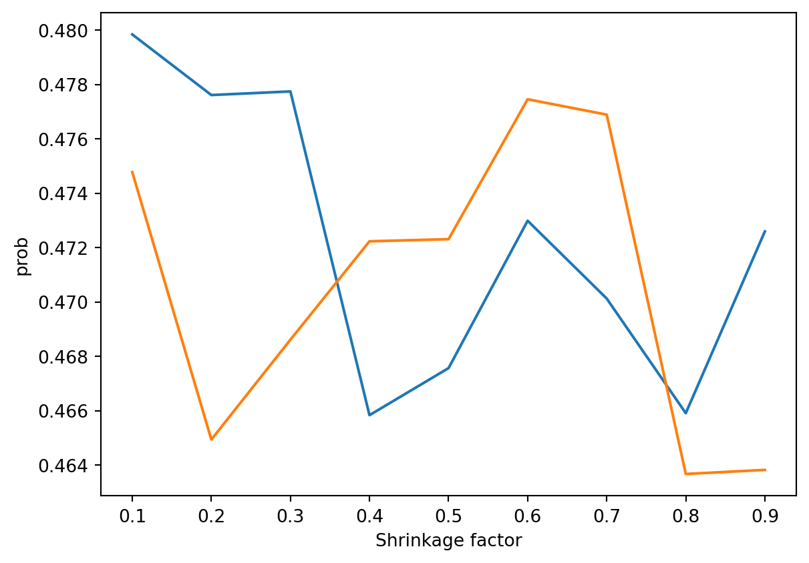
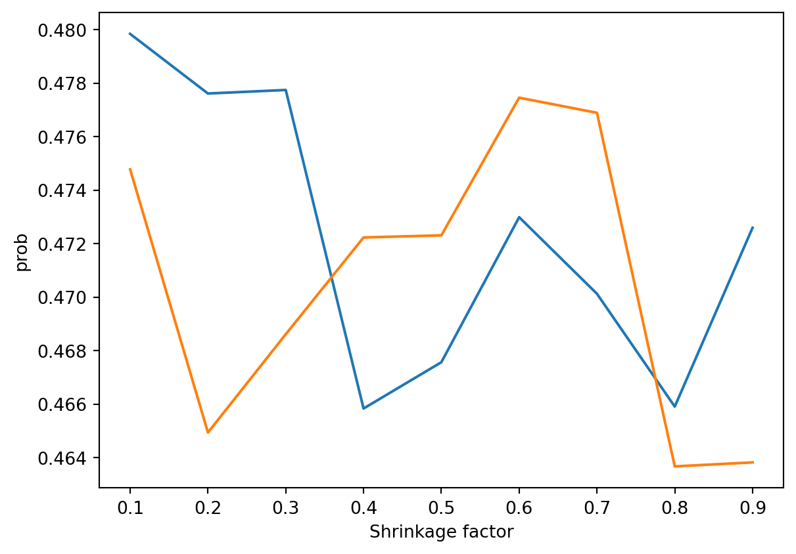
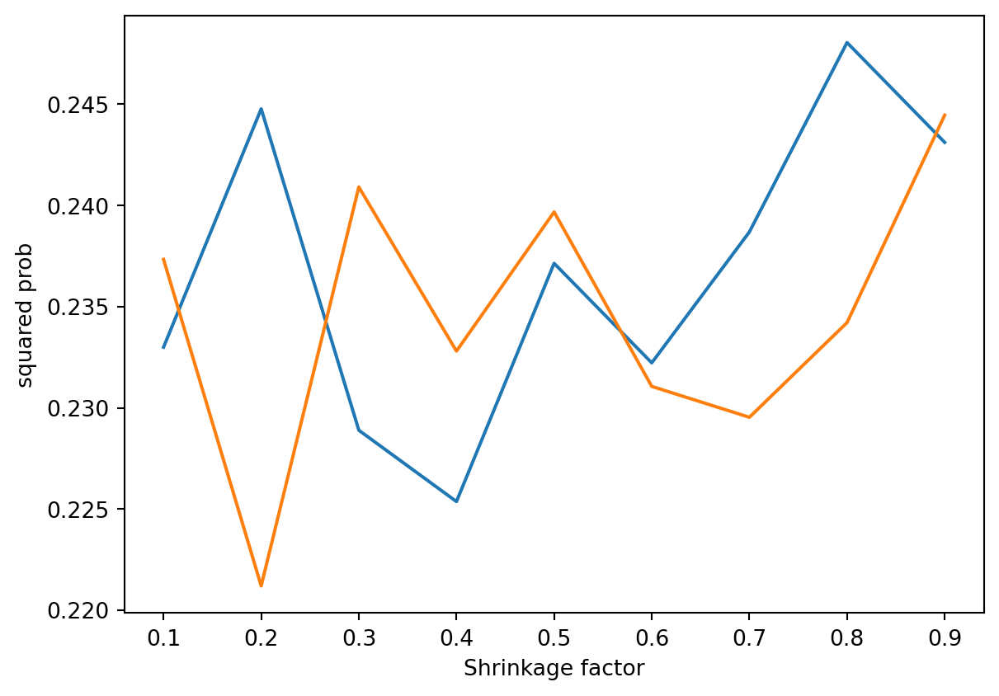
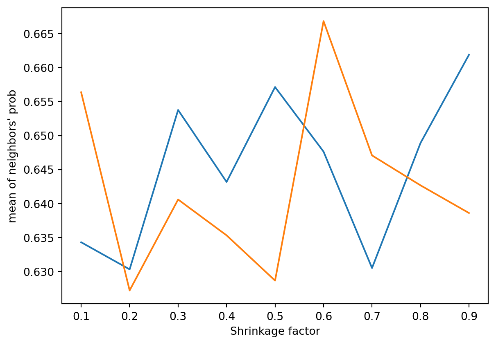
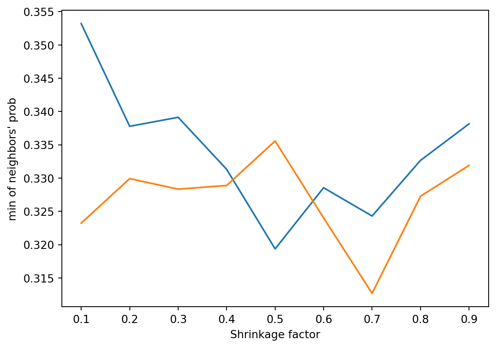

Code
communities = [list(range(1000)), list(range(1000, 2000))]
network = "../data/graphs/experiment_isolated_2_sbm/run_1/twocommunities_edgelist.txt"
plot_curve(
network,
communities,
id, "prob")
from exps import *
import numpy
import matplotlib.pyplot as plt
import networkx as nx
import random
def delete_nodes_from_network(network):
network = read_graph(network)
edge_list = graph_to_edge_list(network)
nodes_to_delete = set() # solve_this_later()
# NB we're deleting all edges instead of the nodes so that
# the communities stay the same
#for i in range(1000):
# r = random.random()
# if r < 0.1:
# nodes_to_delete.add(i)
#for i in range(1000, 2000):
# r = random.random()
# if r < 0.3:
# nodes_to_delete.add(i)
edge_list = list(
edge for edge in edge_list
if (edge[0] not in nodes_to_delete and
edge[1] not in nodes_to_delete))
g = nx.Graph(edge_list)
write_output(g, "output.txt")
return "output.txt"
def make_params(shrink_factor):
return dict(
# seeding params
seed1 = 0.3,
seed2 = 0.3,
# IC params
alpha = 0.1,
reprs = 100)
def run_experiment_range(network, communities, factors, f):
c1s = []
c2s = []
for factor in factors:
params = make_params(factor)
params["n"] = 1000
params["n1"] = 1000
params["n2"] = 1000
params["graph"] = delete_nodes_from_network(network)
params["communities"] = communities
params["seeds"] = set_seeds(params)
ic_result = run_experiment(params)
ic_result = f(ic_result, params)
c1, c2 = split_result_by_communities(ic_result, params)
c1s.append(numpy.mean(c1))
c2s.append(numpy.mean(c2))
return c1s, c2s
factors = [0.1, 0.2, 0.3, 0.4, 0.5, 0.6, 0.7, 0.8, 0.9]
def plot_curve(network, community, f, label):
c1s, c2s = run_experiment_range(network, community, factors, f)
plt.figure()
plt.plot(factors, c1s)
plt.plot(factors, c2s)
plt.xlabel("Shrinkage factor")
plt.ylabel(label)
plt.show()Note, we’ll have to fix the community calculate to create the right communities when using the different graphs. Right now we’re using a specific network for which we know the community configuration.
No transformation:
communities = [list(range(1000)), list(range(1000, 2000))]
network = "../data/graphs/experiment_isolated_2_sbm/run_1/twocommunities_edgelist.txt"
plot_curve(
network,
communities,
id, "prob")
Square:
plot_curve(
network,
communities,
square, "squared prob")
Mean of neighbors:
plot_curve(
network,
communities,
f_mean, "mean of neighbors' prob")
Min of neighbors:
plot_curve(
network,
communities,
f_min, "min of neighbors' prob")